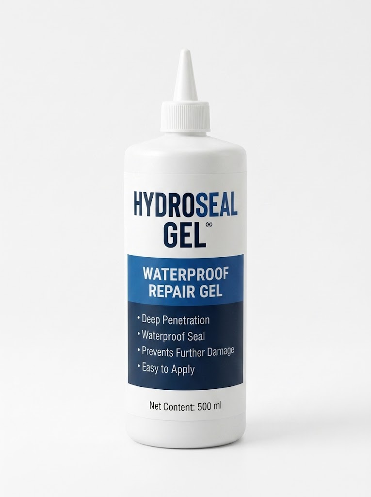

Gets into small cracks
Designed to work into small crack spaces for a more convenient repair process.

A practical gel for sealing small concrete cracks and helping protect damaged areas from unwanted moisture.
Concrete surfaces face everyday wear and moisture. HydroSeal Gel offers a practical way to address small cracks and help reduce further moisture-related damage when used as directed.
Designed to work into small crack spaces for a more convenient repair process.
Helps seal damaged areas to reduce water entering through treated cracks.
Supports routine surface maintenance by helping keep unwanted moisture out.
A practical option for homeowners and small contractors handling repair tasks.
Always follow the product label and manufacturer instructions. These are general preparation steps, not a substitute for the official directions.
Choose your size ↗Remove loose debris and ensure the area is prepared as directed by the product label.
Apply the gel according to the manufacturer’s instructions and recommended conditions.
Observe the stated curing or drying time before exposing the repaired area to water or use.
Simulate concrete cracks, apply HydroSeal Gel+, adjust rainfall, compare treated and untreated sections, and receive an offline scenario analysis. Everything runs locally in your browser.
Select a crack zone, apply a controlled amount of gel, then start rainfall. Your repairs remain on the slab until you reset.
Scenario summary, risk factors, and next-step recommendations.
Use the live visual lab controls and run the scenario analysis. The local analysis works offline and uses transparent illustrative rules.
Ask follow-up questions about the simulation or moisture conditions.
AI responses may be inaccurate. Never use this demo as a substitute for product instructions or a qualified site inspection.
How the demo generates its result
Choose water exposure, crack severity, surface type, and treatment settings.
JavaScript updates the wall illustration and a transparent illustrative risk index.
The offline reasoning engine evaluates risk factors, interactions, warning conditions, and next-step guidance entirely in your browser.
Safety note: active water flow, high water pressure, wide or widening cracks, structural movement, electrical hazards, or persistent leaks require qualified on-site assessment. Always follow the verified HydroSeal Gel label and manufacturer instructions.
Choose a size that suits the task you have in mind.

Concrete crack sealing gel
Thoughtful repair starts here.
Sample prices and stock are for demonstration. Confirm actual product specifications before use.
Feedback from demo orders will appear here.
Complete a demo order, mark it delivered in your account, and share a review.